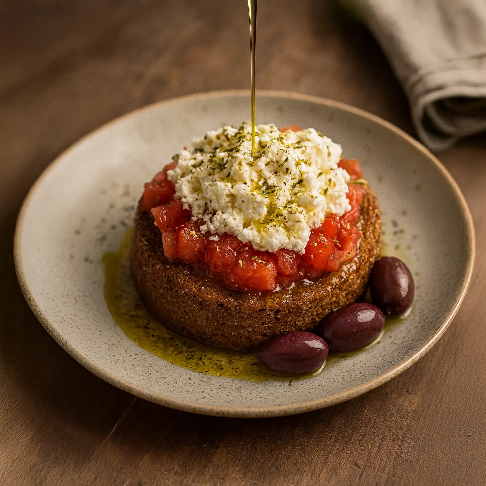

Home
Dakos

Description
Dakos or ntakos, is a Cretan horiatiki (salad)
consisting of a slice of soaked paximadi bread
that is topped with tomatoes and cheeses such
as feta or mizithra.The salad is then flavored
with herbs such as dried oregano. Ingredients
such as olives, capers, and caper berries are
also often added to the dish.
The salad portion of the dish has been likened
to other Mediterranean dishes such as panzanella
in Italian cuisine and pa amb tomàquet in Catalan cuisine.
Ingredients
- 1 round barley rusk, cut in half
- 1 tomato
- 1 teaspoon(s) vinegar, of white wine
- 1 teaspoon(s) granulated sugar
- 1 pinch salt
- pepper
- 1 tablespoon(s) basil, finely chopped
- thyme, fresh
- 1/2 spring onion, finely chopped
- 100 g feta cheese, cut into pieces
- 1 tablespoon(s) olive oil
To serve
- olives, into rounds
- pepper
- oregano, dry
Steps
- Place the 2 pieces of the dako onto 2 plates, outer side or crust facing down.
- Cut the tomato in half. Grate one half into a bowl. Cut the other half into little cubes. We are going to make a mixture with the grated tomato to soften the dako.
- Add to a bowl the grated tomato, the vinegar, sugar, salt, pepper, finely chopped basil and finely chopped thyme. Toss. Taste and adjust according to your preferences.
- Pour the mixture over the dako.
- Top with the tomato cubes, the finely chopped fresh onion, the feta cheese, and drizzle with the olive oil.
- Serve with olives, olive oil, some freshly ground pepper, and oregano.
Home